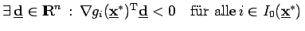
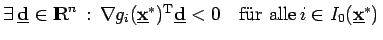

Inhalt Index DeskTop Bronstein

 Optimierung Nichtlineare Optimierung Problemstellung und theoretische Grundlagen Optimalitätsbedingungen
Optimierung Nichtlineare Optimierung Problemstellung und theoretische Grundlagen Optimalitätsbedingungen


Ist  ein lokaler Minimalpunkt von (18.31a,b) und erfüllt der zulässige Bereich in
ein lokaler Minimalpunkt von (18.31a,b) und erfüllt der zulässige Bereich in  die Regularitätsbedingung , dann genügt
die Regularitätsbedingung , dann genügt  den lokalen KUHN-TUCKER-Bedingungen. Für eine detaillierte Darstellung siehe 18.5.
den lokalen KUHN-TUCKER-Bedingungen. Für eine detaillierte Darstellung siehe 18.5.